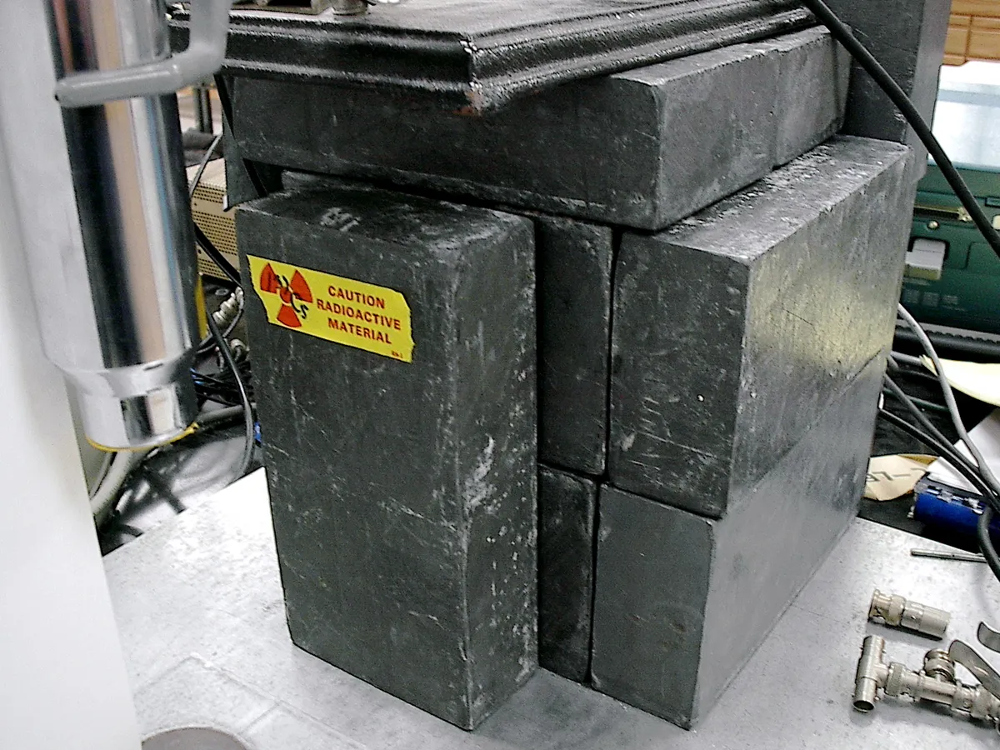
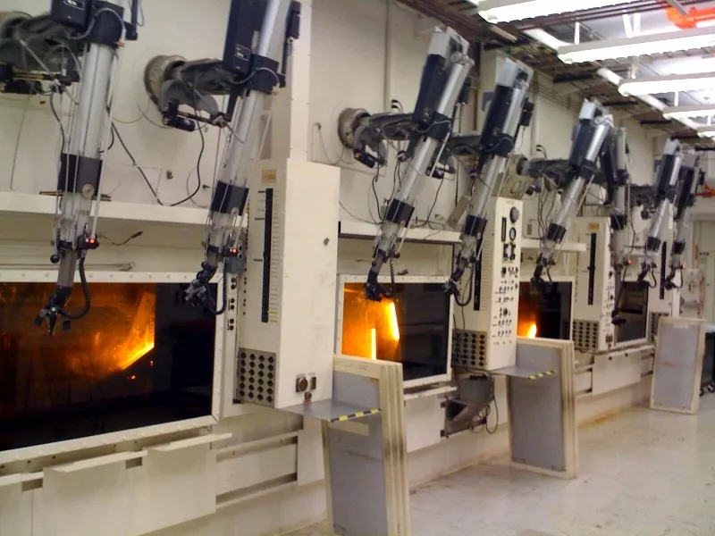
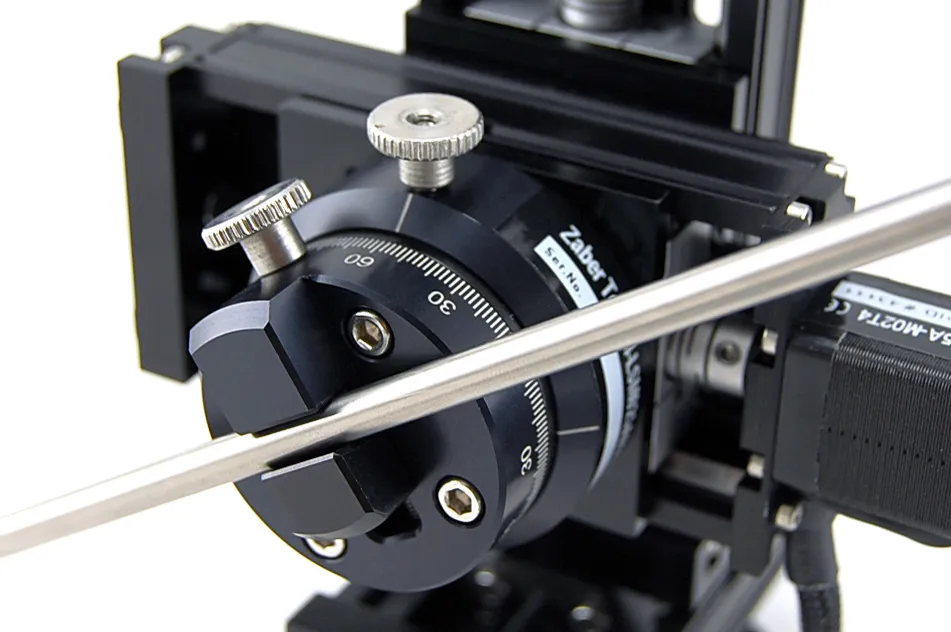

Remote-handling application
Remote Handling
Ball Tong Manipulators
Remote-handling equipment for operations where distance and controlled manipulation are required.
Request specificationsA focused catalogue for remote handling, shielding and specialized equipment. Contact Telodynamic to discuss suitability and request technical information.
Photography shows real industry applications. Pictured equipment belongs to the credited sources; request Telodynamic product details for your application.
Showing 5 products
Remote-handling equipment for operations where distance and controlled manipulation are required.
Request specifications
Radiation-shielding applicationPortable radiation-shielding solutions configured around the intended work environment and application.
Request specificationsShielded containment and handling solutions for applications involving radioactive materials.
Request specifications
Shielded viewing-window applicationShielding configurations that support operator visibility while maintaining physical separation from the work area.
Request specifications
Precision manipulation examplePrecision manipulation equipment for specialized handling requirements and controlled work environments.
Request specificationsTelodynamic can discuss an existing product requirement or a custom engineering need.